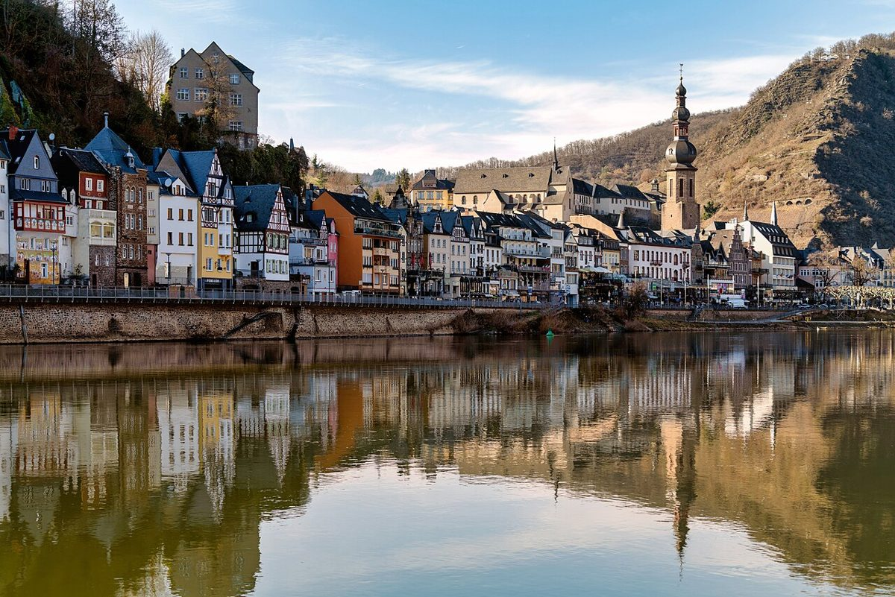

Découvrez Cochem sur la Moselle : Un joyau allemand à explorer

Niché au cœur de la vallée de la Moselle en Allemagne, Cochem est un véritable joyau à découvrir. Avec son château médiéval perché sur une colline, ses ruelles pavées et ses vignobles en terrasses, cette petite ville offre un mélange parfait entre histoire, nature et gastronomie. Que vous soyez amateur de vin, d'histoire ou simplement en quête de paysages idylliques, Cochem a de quoi vous séduire.
Comment se rendre à Cochem ?
Cochem est facilement accessible en voiture ou en transports en commun. Depuis Francfort ou Cologne, comptez environ deux heures de route pour rejoindre la ville. Si vous préférez le train, de nombreuses lignes régionales desservent la gare de Cochem, située à quelques minutes à pied du centre-ville. Pour les voyageurs internationaux, les aéroports les plus proches sont ceux de Francfort et de Cologne/Bonn.
Quand visiter Cochem ?
La meilleure période pour visiter Cochem est entre les mois de mai et septembre, lorsque le temps est doux et les vignobles sont en pleine floraison. C'est aussi la période idéale pour profiter des activités en plein air, comme les croisières sur la Moselle ou les randonnées dans les collines environnantes. Si vous souhaitez éviter la foule, privilégiez les mois de mai ou septembre plutôt que les pics estivaux.
Les incontournables à Cochem
1. Le château de Reichsburg
Dominant majestueusement la ville, le château de Reichsburg est un must. Construit au XIIe siècle, il offre une vue imprenable sur la Moselle. Des visites guidées sont disponibles pour explorer ses salles richement décorées et découvrir son histoire fascinante.
2. La vieille ville de Cochem
Promenez-vous dans les ruelles pittoresques de la vieille ville, bordées de maisons à colombages et de boutiques traditionnelles. Ne manquez pas la Marktplatz, une place animée entourée de cafés et de restaurants.
3. Les croisières sur la Moselle
Une croisière sur la Moselle est une manière relaxante d'admirer les paysages environnants. Optez pour une excursion d'une journée ou une simple balade d'une heure pour profiter de vues panoramiques sur les vignobles et les villages alentour.
4. Les vignobles et dégustations de vin
La Moselle est réputée pour ses vins, notamment ses rieslings. Profitez de votre séjour pour visiter les domaines viticoles locaux et goûter à ces crus exceptionnels. Certains domaines proposent des visites guidées et des dégustations.
5. Le parc naturel de l'Eifel
Pour les amateurs de nature, le parc naturel de l'Eifel, situé à proximité, offre de magnifiques sentiers de randonnée et des paysages variés. C'est l'endroit idéal pour une escapade en pleine nature.
Que manger à Cochem ?
La cuisine locale est un mélange savoureux de spécialités allemandes et régionales. Ne manquez pas de goûter au « Zwiebelkuchen », une tarte à l'oignon souvent accompagnée de vin nouveau, ou au « Flammkuchen », une sorte de pizza fine typique de la région. Pour les amateurs de viande, les saucisses allemandes, comme la bratwurst, sont incontournables. En dessert, essayez le « Moselkuchen », un gâteau aux fruits locaux.
Cochem est une destination qui ravira tous les voyageurs, des amoureux de la nature aux passionnés d'histoire et de gastronomie. Avec ses paysages à couper le souffle, son patrimoine riche et son ambiance chaleureuse, cette petite ville vous laissera des souvenirs inoubliables.
Haiktec
- Le Guide Pratique pour les Enseignants : Stratégies Simples pour Gagner du Temps et Améliorer vos Cours
- Planificateur de Chantier & Suivi Budgétaire pour Artisans
- 7 Histoires Enchantées pour le Dodo : Des Aventures Magiques pour les Petits Explorateurs
Text mit KI erstellt und automatisch geprueft.